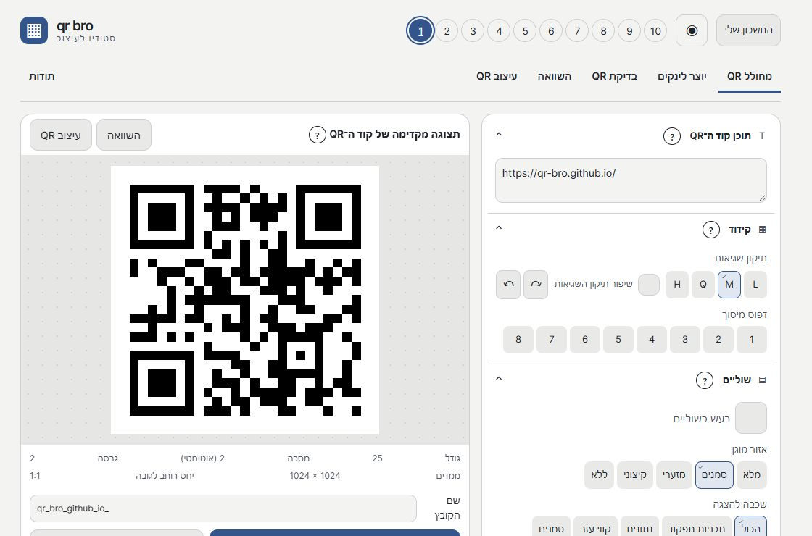
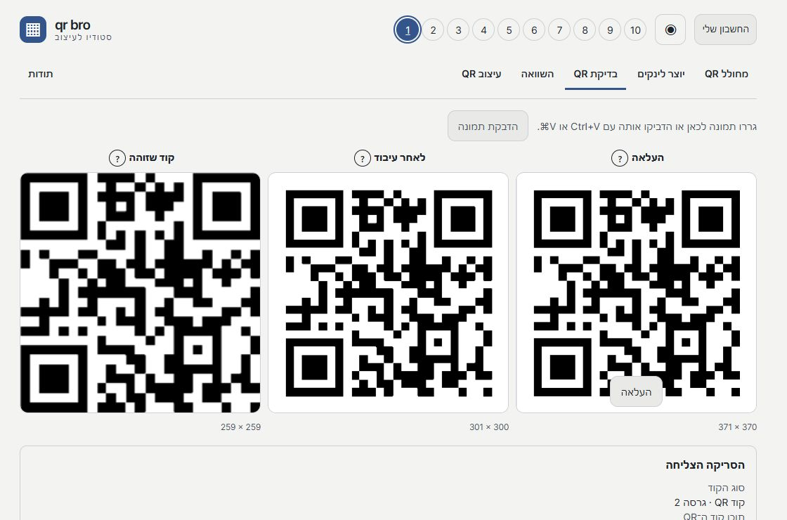
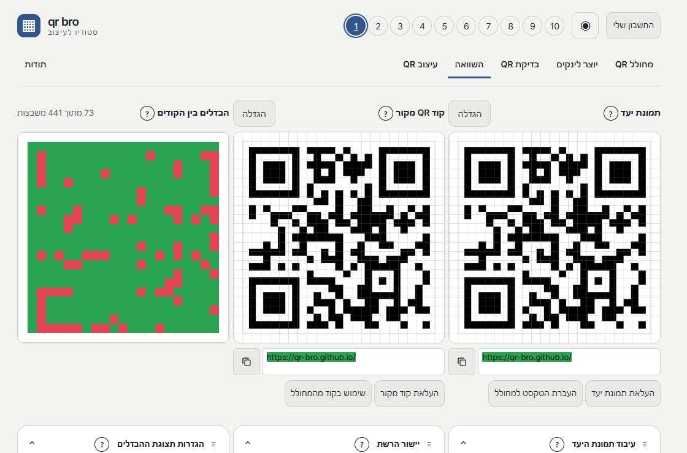
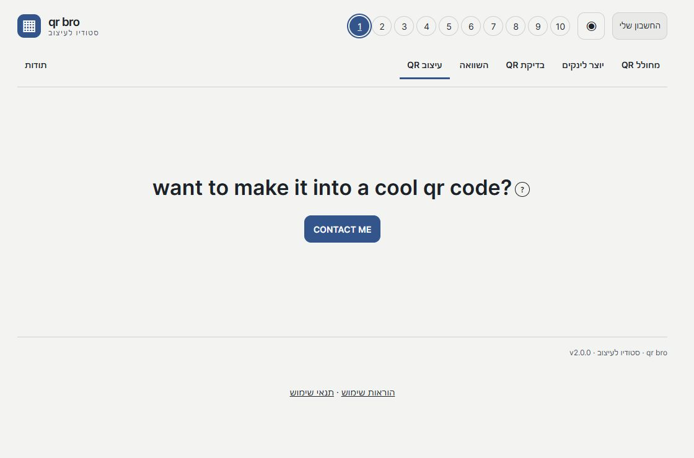
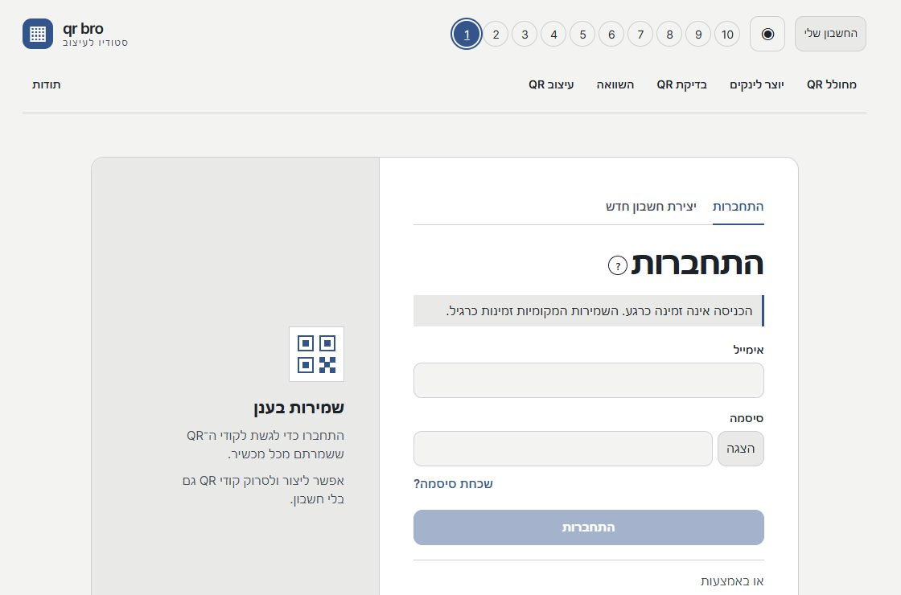
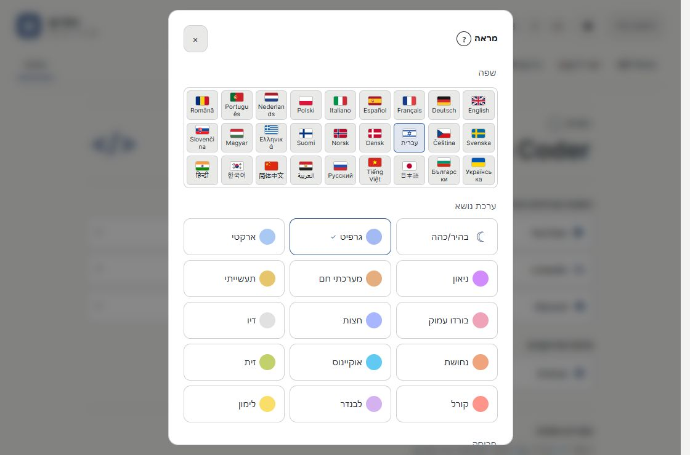
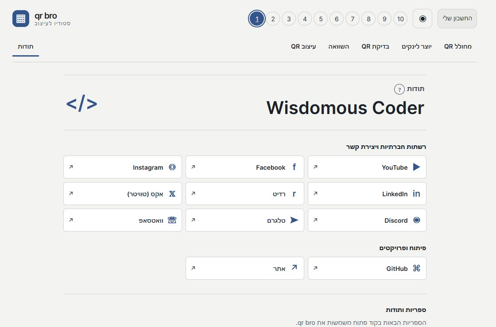

הוראות שימוש
מחולל QR
פתיחה באתר ↗הקלידו קישור או טקסט. התצוגה מתעדכנת בזמן העריכה. הורידו PNG לתמונה אחת או ZIP לקבלת שכבות הקוד בנפרד.

תוכן הקוד
הדביקו את הטקסט המלא שתרצו לקבל בסריקה.
קידוד
בחרו רמת תיקון שגיאות ותבנית מיסוך. תיקון גבוה עוזר לשחזר נתונים פגומים ועשוי להגדיל את צפיפות הקוד.
שוליים
רוחב השוליים נמדד במשבצות. ארבע משבצות פנויות עוזרות לסורק לאתר את הקוד. אפשר לכוון גם רעש, אזור מוגן ושכבות.
פיקסלים וסמני איתור
בחרו צורות למשבצות ועצבו בנפרד את סמני הפינות. לאחר שינוי צורה כדאי לבדוק את הסריקה.
צבעים
בחרו צבעים לאזורים הבהירים והכהים או הפכו ביניהם. שמרו על ניגודיות שמאפשרת סריקה.
אפשרויות מתקדמות
פתחו את הסעיף לשליטה בצפיפות הקוד, במידות ובפרספקטיבה.
גרסה וגודל פיקסל
הגדירו טווח גרסאות וגודל פיקסל. אם התוכן חורג מהמגבלה, קצרו אותו או העלו את הגרסה המרבית.
כוונו פרספקטיבה בכל ציר. לאחר יצירת עיוות בדקו את התמונה המיוצאת.
קנה מידה ויחס ממדים
כוונו את הזום, גודל הקנבס, היחס בין הצלעות והשקיפות. כפתורי JSON מאפשרים לייצא ולטעון מחדש את הגדרות העריכה.
בדיקת QR
פתיחה באתר ↗העלו תמונת QR, גררו אותה או הדביקו מהלוח. קראו את תוצאת הסריקה והתוכן שפוענח. בדקו ניגודיות, שוליים וצפיפות והעתיקו את התוצאה או העבירו אותה למחולל.

הבדלי תמונה
בדקו אילו פיקסלים השתנו בין התמונה המקורית למעובדת.
התאמות תמונה
נסו שינוי גודל, גוני אפור, ניגודיות, בהירות או טשטוש. נעלו הגדרה כדי לשמור אותה בניסיונות אקראיים והשוו לתוצאה המקורית.
השוואה
פתיחה באתר ↗העלו תמונת יעד וקוד מקור או השתמשו בקוד מהמחולל כמקור. החלון השלישי מציג את ההבדלים בין המשבצות. אפשר להגדיל כל אחת מתמונות הקלט ולהעתיק את התוכן שפוענח.

עיבוד תמונת יעד
כוונו גוני אפור, ניגודיות, בהירות, טשטוש ופיקסול לפני ההשוואה.
יישור הרשת
בחרו ביעד או במקור כבסיס לרשת משותפת. אם השוליים שונים, בחרו יישור נפרד. במצב ידני אפשר לכוון גודל רשת ורוחב שוליים.
מראה הרשת
הפעילו את הרשת, בחרו על אילו תמונות תופיע וכוונו את צבע הקווים והאטימות.
הגדרות שכבת־על
הפעילו שכבת־על וכוונו את השילוב והאטימות כדי להשוות פרטים חופפים.
תצוגת הבדלים
בחרו מצב צבע שמציג התאמות, סוג הבדל או עוצמה. סמנו משבצות לבדיקה, גררו לשינוי סדר או החליפו את הצבע המזהה שלהן.
נתוני השוואה
בדקו כמה משבצות שונות ומה הבהירות הממוצעת בהשוואה הנוכחית.
הגדרות תיקון
כוונו את התיקון, בדקו בתצוגה מקדימה, הדגישו הבדלים והורידו תמונת תיקון או מסכה.
עיצוב QR
פתיחה באתר ↗לחצו על CONTACT ME כדי לפתוח בוואטסאפ בקשה מוכנה לעיצוב אישי. תוכלו לערוך את ההודעה לפני השליחה.

החשבון שלי ומקומות השמירה
פתיחה באתר ↗הכפתורים הממוספרים עוברים בין עשרה פרויקטים שנשמרים במכשיר. לסנכרון בין מכשירים התחברו לחשבון. בהרשמה באימייל וסיסמה אשרו את הכתובת בקישור או בקוד שנשלח אליכם. אפשר להתחבר גם דרך Google או GitHub. בחשבון ניתן לערוך פרופיל, לנהל אמצעי כניסה ואימות דו־שלבי, לבחור גרסה כשיש התנגשות בסנכרון, לגבות הגדרות ולהתנתק.

מראה ושפה
פתיחה באתר ↗לחצו על כפתור המראה שלצד מקומות השמירה. בחרו שפה, ערכת נושא ומצב בהיר או כהה. השפה שבחרתם נשמרת במכשיר.

תודות
פתיחה באתר ↗בדף התודות תמצאו קישורים ליוצר ולספריות המשמשות באתר. תנאי השימוש זמינים בתחתית האתר.
